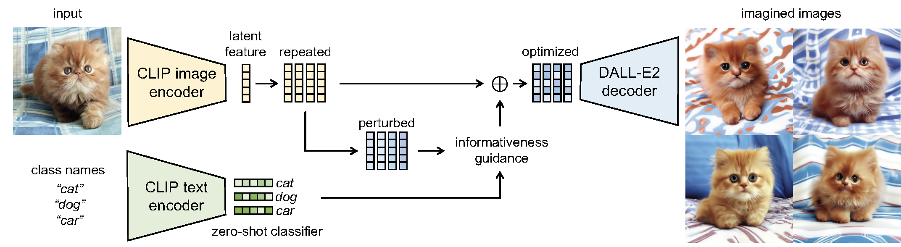
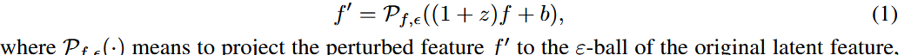
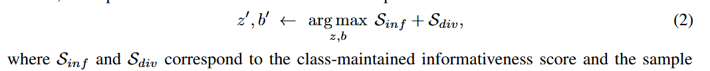
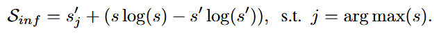

gif-sd论文阅读
[GIF-SD]2023 Expanding Small-Scale Datasets with Guided Imagination

GIF-SD的原理： GIF-SD（Guided Imagination Framework with Stable Diffusion）是一种基于稳定扩散模型的引导想象框架，旨在扩展小规模数据集。其工作流程主要包括以下几个步骤：
潜在特征提取：给定来自目标数据集的种子图像 x，我们首先通过生成模型的编码器提取其潜在特征 f（x）。GIF 首先将其潜在特征 f = fCLIP-I（x） 重复 K 次，
引导优化：在潜在特征空间中，通过添加扰动（如噪声）并优化这些扰动，使得生成的新样本在类别一致性的基础上引入更多信息。这一过程利用了两个关键标准：
- 类别信息保持：确保生成的新样本与种子图像保持相同的类别标签。
- 样本多样性提升：鼓励生成的新样本在内容上更加多样化，避免重复或相似的样本。
步骤：对于每个潜在特征 f ，我们用随机初始化的噪声对其注入扰动，

为了防止失控的想象，我们对潜在特征 f 进行残差乘法扰动，并对扰动执行 ε-ball 约束，如下所示：

每个潜在特征都有独立的 z 和 b。按照我们探索的标准，GIF 在潜在特征空间上优化 z 和 b，如下所示

这里的$S_{inf}$和$S_{div}$分别为类信息保持和样本多样性提示
类别信息保持：为了在不更改类标签的情况下提高生成数据的信息量，采用了 CLIP 的零样本分类功能（CLIP’s zero-shot classification abilities）。
这里用 $f_{CLIP-T}$来 对样本 x 的类名 y 进行编码，并将嵌入 $w_y=f_{CLIP-T}(y)$ 作为类 y 的零样本分类器，每个潜在特征以根据其与$ w_y$ 的余弦相似性进行分类，即即属于 y 类的 x 的亲和力分数为 $\hat{s}_y=cos(f(x),w_y)$ ，它形成了一个基于 softmax σ的目标数据集总C类的预测概率向量$s=\sigma([\hat{s_1},\dots,\hat{s_C}])$
扰动特征 s′ 的预测可以用同样的方式获得。然后，我们设计 $S_{inf}$ 来提高 扰动 特征的信息熵，同时保持其作为种子样本的类语义：

样本多样性：为了促进所生成样本的多样性，将 $S_{div}$ 设计为种子样本的所有扰动潜在特征之间的 Kullback-Leibler （KL） 散度:$S_{div}=D_{KL}(f^\prime||\bar{f})$
其中 f ′ 表示当前扰动的潜在特征，f ̄ 表示种子样本的 K 扰动特征的平均值。为了能够测量特征之间的 KL 散度，我们应用 softmax 函数将特征向量转换为 KL 散度的概率向量。
图像生成：经过优化的潜在特征被送入稳定扩散模型的解码器，生成新的图像样本。
创新点：GIF方法通过引入类别信息保持和样本多样性提升的两大关键标准来优化生成数据，使得生成的样本在类别一致性和信息丰富度上都有所提升。与无引导的数据扩展方法相比，GIF大幅提高了模型的准确率。